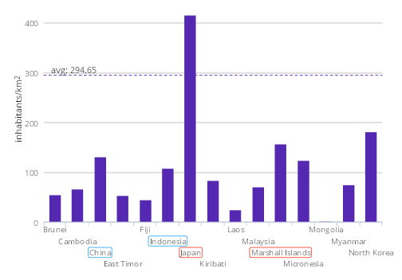
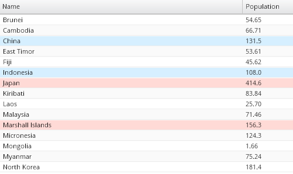
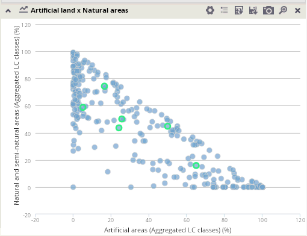
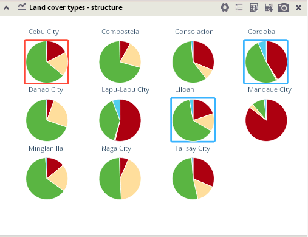
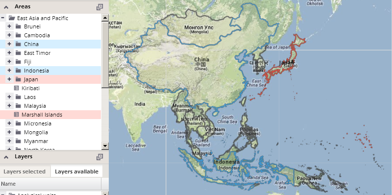
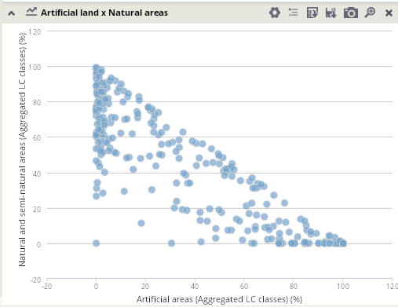
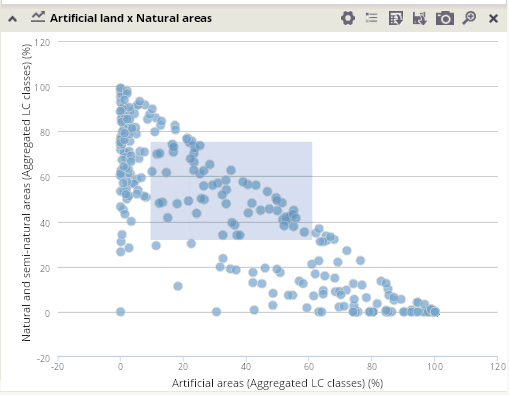
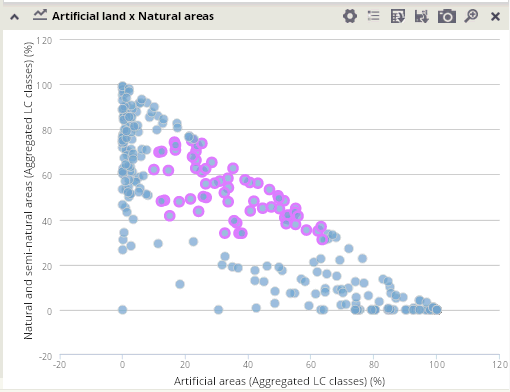
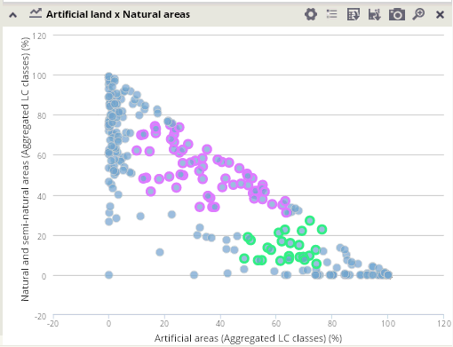

Selection of analytical units in charts
All tables, columns, pie or scatter charts are interactive, so you can select analytical units by clicking on them in charts. For multiple selection, hold down the CTRL key during the selection.
More different multi-selections can be done via setting the selection color in the color selection panel. Labels of selected units are highlighted by corresponding colors in all charts and tables in the visualization.

All units selected in charts will be highlighted by corresponding colors also in the hierarchical tree of units and in the map.

Selection of units in scatter charts
The scatter chart provides an enhanced functionality for multiple units' selection: 2-dimensional intervals of units can be selected by drawing a rectangle over the area in the chart which should be selected. It can be realized by clicking into the scatter chart and dragging the mouse while holding down the left mouse button, until the rectangle is finished. Again, a multiple selections can be defined using this selection tool in the scatter chart.
 
 
You can also select units of your interest in the map or in the hierarchical tree of analytical units.